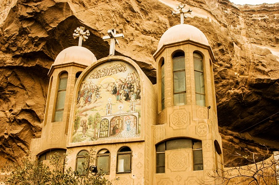
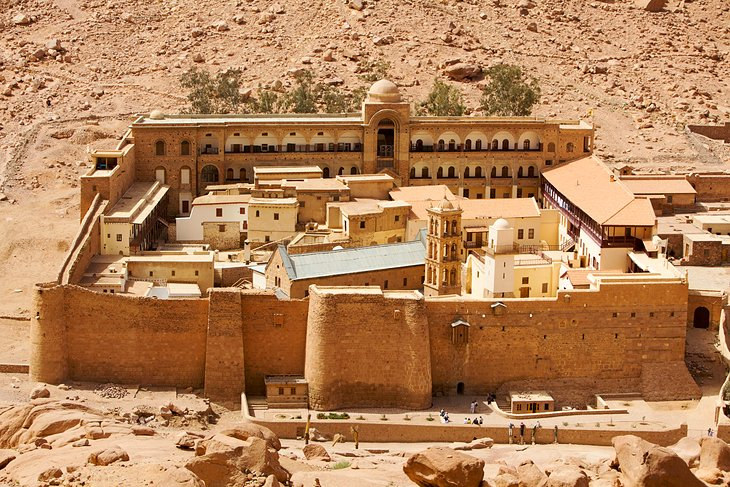

Because Egypt is a predominantly Muslim country, most non-Egyptians are unaware that Egypt has some of the oldest and most historically significant churches, cathedrals and monasteries in this part of the world.
You don’t need to be Egyptian or even Christian to appreciate the history of these centuries-old places of worship, or the beauty of the more modern ones.
While many of these churches can be found in Coptic Cairo, some are in more… remote places (Sinai mountains, anyone?). But whatever the destination, each of these churches, cathedrals and monasteries should be visited at least once.
*Some churches you should visit in egypt*
1-Hanging Church
The Hanging Church is believed to go back to the Patriarchate of Isaac of Alexandria, a Coptic Pope who held the office in the 7th century.
The church is constructed on the southern gatehouse of the Roman-developed Babylon Fortress and gets its name from the way that its core is suspended over a gate. Officially,
The Louvre has an astounding collection of 35,000 artworks, including countless masterpieces. It's impossible to see it all in a day or even in a week. Take a private guided tour or focus on a shortlist of key artworks for the most rewarding experience.
Officially, it is known as the Church of the Virgin Mary. The Hanging Church is situated at the core of Old Cairo. The Hanging Church is recognized as the place of many specters of Mary.
Hence, this church’s interesting past makes it one of the oldest churches in Egypt.
2-Saint Simon Church

Numerous churches have been created into the caves located in Mokattam, out of which the Monastery of St. Simon the Tanner is the biggest with a seating range of 20,000. Even the Cave Church of St. Simon is the largest church in the whole Middle East
Simon the Tanner was an artist saint to whom the cave church was dedicated to. He is linked with the marvel of influencing the Mokattam mountain utilizing a pre-existing cave and the incline that directed inside it. it was made to hold two storeys. Different close by caves have also been developed into separate church locations and all of them have been connected to form a huge Christian complex in the core of garbage city
The walls of the church are decorated with several incredible pictures carved on the rocks describing situations from the Bible.
3-St. Catherine’s Monastery

Part of a UNESCO World Heritage Site (for other Egyptian heritage , the Orthodox Saint Catherine Monastery is the oldest Christian monastery in the world still used for its original function.
According to UNESCO: “Its walls and buildings are of great significance to studies of Byzantine architecture and the Monastery houses outstanding collections of early Christian manuscripts and icons. The rugged mountainous landscape, containing numerous archaeological and religious sites and monuments, forms a perfect backdrop to the Monastery.”
St. Catherine's Monastery is at the foot of Mt. Sinai, where it's believed by the Abrahamic religions that Moses found the Burning Bush and received the 10 Commandments.
4-Church of St. George
One of the few round churches built in Egypt, St. George’s is built on top of an ancient Roman Tower that connects to the monastery below.
The interior of the church is known for its stained glass and rich woodwork.”
St. George’s is one of the only still-active churches in the Coptic Cairo area, and is considered the principle Greek Orthodox church in Egypt. Visitors of all religions are welcome any time, except to the monastery, which is closed to the public.